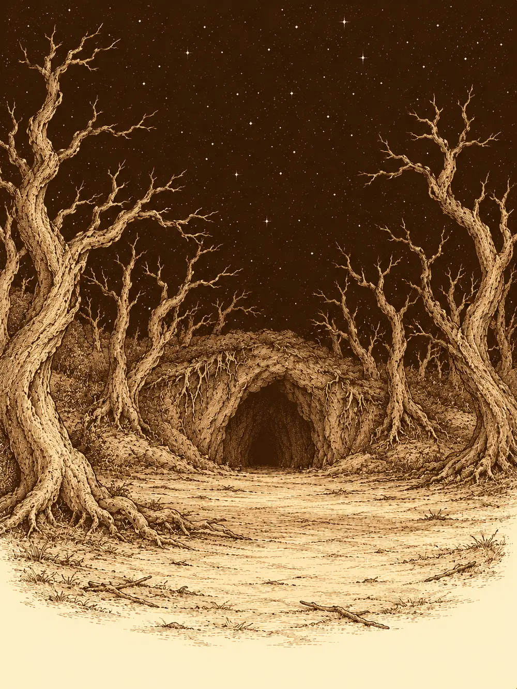

Capítulo 78
El destino de Sirth
Libro V · Los guardianes del Norte y del Sur
La nota había llegado sin firma. Hayate la llevaba doblada en el cinturón desde que se la entregaron en la ciudad, y cada vez que la releía le gustaba menos. Estaba escrita como un poema, con versos medidos y una cadencia casi bonita, y hablaba de muerte. No sabía quién la había mandado ni por qué. Había pasado semanas en su templo, barriendo, rezando, remendando sus piezas de cuero, y en cuanto le llegaron noticias de Sirth voló hacia Sho.
Maroxi también llegaba de lejos. Durante mucho tiempo había trabajado de ayudante del alquimista, y hasta lo había sustituido en la tienda sin que nadie notara el cambio, porque para un mago que podía tomar cualquier rostro aquello era un juego. Luego lo enviaron al sur a investigar. Fue de ciudad en ciudad suplantando a unos y a otros, hasta alcanzar la aldea de los aarakocra y, más allá de las montañas, un paisaje del que no le gustaba hablar. Allí no había humanos ni elfos cuyo aspecto pudiera copiar, solo demonios y criaturas que no se dejaban imitar. Y una puerta enorme que cerraba el camino.
Sun Gukon y Jin completaban el grupo.
El shogun los recibió en la gran sala, rodeado de nobles y samuráis, con Rua a su lado. La joven les sonrió al verlos entrar. El gobernante, en cambio, tenía una carta en la mano y se rascaba la barba entre accesos de tos.
"Me han enviado esto", dijo. "Dicen que Guxi, el funcionario que puse al frente de los cazadores, no cumple con sus obligaciones. Está firmado con lo que creo que es la huella de un mono".
Sun Gukon dio un paso adelante sin el menor apuro. La carta era suya. Proponía que el gremio tuviera representantes propios y denunciaba que no se pagaba a los cazadores. Había mucho resquemor, aseguró, entre casi todos ellos.
El shogun pidió los registros. Un noble se acercó cargado de papeles y el gobernante fue pasando hojas: misiones, fechas, nombres. Buscó a Sun y no lo encontró. Buscó a Hayate y tampoco.
"Ustedes no han firmado el contrato".
Sun replicó que solo se lo habían ofrecido una vez, y que nadie les había demostrado que aquel Guxi fuera de verdad quien decía ser. El shogun lo miró con paciencia de anciano.
"Lo envié yo. Y les recuerdo que falsificar esa insignia es un crimen bastante grave". Dejó los papeles sobre el brazo del asiento. "Solo veo una solución. Firmen el contrato, y a partir de ahí se les pagará lo que corresponda".
"Si me lo permite, yo seguiré siendo voluntario", dijo Hayate.
Sun aceptó firmar. El shogun se volvió entonces hacia Maroxi, que había seguido toda la escena con cara de no entender qué tenía que ver con él. El mago hizo una reverencia: él sí había firmado, el primer día, porque se lo exigieron para quedarse. Lo que no había visto era la paga. El gobernante buscó su nombre, encontró las misiones registradas y frunció el ceño. Ordenó revisarlo todo y abonar lo que se le debiera. Nadie habló de quitarle el cargo a Guxi ni de nombrar representantes, y los cazadores salieron de allí con la sensación de haber ganado la mitad de algo.
En la puerta de la base de Sho los saludaron Tip y Top, y dentro alguien les advirtió que no tocaran mucho la caja, porque aquello iba a juicio. No todos sabían de qué caja hablaba. Había un cofre que antes no estaba allí. Maroxi lo miró con interés.
Sirth estaba en su habitación, dormido, y no dormía bien. Sudaba, se retorcía bajo la manta, murmuraba. Hayate se inclinó sobre él para examinarlo. Bajo la piel, en las venas del cuello y de los brazos, corría todavía aquel líquido negro que el clérigo les había sacado del cuerpo a él y a Erk. No estaba peor, pero tampoco mejor. Jin le tocó el hombro para despertarlo y el clérigo le agarró el brazo en sueños, con una fuerza que le hizo daño. Luego abrió los ojos y lo soltó.
"Perdonad. No estoy muy bien todavía".
Se incorporó con esfuerzo. Sin armadura parecía otro: delgado, pálido, con las venas negras dibujándole la piel como un mapa. Le preguntaron si había alguna novedad, alguna manera de curar aquello.
"Esto no se cura con pociones. Llevo meses intentando revertirlo", dijo. "Pero creo que sé quién podría ayudarnos. Tendréis que acompañarme. No creo que pueda llegar solo".
Mientras tanto, en la sala, Maroxi había tocado el cofre y el cofre había desaparecido delante de Sun.
"¿Qué has hecho?".
El mago se lo explicó con toda tranquilidad. Había mandado el cofre a otra dimensión. Él llevaba encima una miniatura, y con ella podía devolverlo al mundo cuando quisiera, donde quisiera. Sun le exigió que lo trajera de vuelta en ese mismo instante. Maroxi no lo hizo.
La discusión seguía abierta cuando Sirth apareció en la puerta, apoyado en Hayate y en Jin. Maroxi recordó que aún guardaba una botella del líquido negro de Otakemaru y la sacó para enseñársela. Sirth alargó la mano y la tocó, y el cristal se deshizo en polvo. El líquido se derramó y desapareció entre las tablas del suelo.
"Gracias por dejarme hacer pruebas con ella", dijo Maroxi, con amargura.
"Eso contaminó a Hayate y a Erk. Intenté quitárselo a ellos, y mira cómo estoy".
Nadie volvió a hablar del cofre. El clérigo estaba listo para el viaje.
Sirth dibujó en el suelo un círculo de sombras. Las sombras crecieron, se cerraron sobre ellos como un tubo y por un momento no vieron nada.
Aparecieron en un lugar extraño. El cielo era negro y estaba salpicado de puntos blancos, pero el aire era de fuera y había árboles alrededor, muertos, retorcidos, sin una hoja. Al fondo se abría una cueva. Dentro había montones de arena, huesos por todas partes, estanterías llenas de pociones que no habían visto nunca y un caldero que burbujeaba solo. Y tres tumbas, bien alineadas, cada una con un nombre: Chilia, Siltara, Narae.
Sirth se arrodilló ante ellas.
"Mis guías", dijo. "Vosotras que conocéis el destino de los shadar-kai. Yo, Sirth, necesito vuestra ayuda".
La tierra de las tres tumbas empezó a moverse. Asomó una mano, luego otra. Tres figuras salieron de la arena, se sacudieron el polvo de encima, se estiraron como si despertaran de un sueño muy largo. Eran tres mujeres shadar-kai muy parecidas entre sí. Rodearon a Sirth, le cogieron la cara, lo miraron a los ojos una por una, en silencio. Luego Chilia se plantó de pronto delante de los cazadores, tan deprisa que nadie la vio moverse.
"¿Sois sus amigos?".
"Desde hace tiempo".
"Vuestro amigo está maldito. Su vida pende de un hilo. Pero la elección no es nuestra". Sonrió de una forma rara. "Si os ha traído aquí, la elección será vuestra".
Les tocó la frente uno a uno, con un gesto tan rápido que apenas lo sintieron, y cayeron al suelo.
Despertaron flotando en un vacío oscuro, separados de sus cuerpos. Delante de ellos, Chilia jugaba con tres hilos que venían de ninguna parte y se perdían en la nada. Los hilos cambiaban de color, blanco, negro, rojo, sin orden fijo.
"Estos hilos representan el nacimiento de vuestro amigo. Solo uno de ellos le permitirá vivir. Los otros son de un Sirth cuyo destino es la muerte. Tenéis que descubrir cuál es".
Y desapareció.

Tocaron el primero. El vacío se onduló y se encontraron en unas montañas soleadas que Maroxi reconoció enseguida: estaban cerca de su tierra natal, en otro continente. Una pareja de shadar-kai vivía allí de sus ovejas. La mujer dio a luz; el padre corrió a ayudarla; un niño lloró. Después vieron a ese niño con dos o tres años, dando sus primeros pasos entre las ovejas.
"Es falso", dijo Maroxi al volver. "Conozco esas tierras. Ahora están arrasadas".
El segundo hilo los llevó bajo tierra, a un templo oculto donde cinco figuras encapuchadas rodeaban un altar y recitaban algo. Una mujer daba a luz en el centro, y la sangre resbalaba por las paredes. En cuanto nació el niño, los encapuchados apuñalaron a la madre y lo bañaron en su sangre, y le grabaron en la frente la calavera de Bhaal. Más tarde vieron a un Sirth de dos años, con cortes en la cara, sentado en un círculo mientras aquellas figuras le recitaban algo y una magia oscura lo envolvía.
El tercer hilo mostró una ciudad en ruinas, como si un ejército hubiera pasado por allí pocos días antes. Una mujer famélica corría entre los escombros con un bebé en brazos. Llegó a un templo medio derruido, con la imagen de una diosa de los elfos, una diosa buena, y rezó llorando. Dejó al niño en la puerta y se alejó dando tumbos. Entonces, desde dentro del templo, una mano negra y retorcida cogió al bebé y lo metió en la oscuridad. El templo se transformó ante sus ojos: la diosa desapareció como una ilusión y solo quedaron unas ruinas sin nombre.
Discutieron. A alguno le parecía que el niño bañado en sangre era el que más encajaba con lo que conocían de Sirth. Jin, que también había sido criado desde pequeño para matar, opinó que alguien educado así no habría acabado cuidando de nadie. Hayate intentó detectar con su magia en qué hilo corría la enfermedad, y la magia no le respondió; allí no funcionaba. Al final la mayoría eligió el tercero. Chilia los miró, sonrió y cortó los otros dos.
"Vuestras elecciones tendrán su resultado cuando acabéis las pruebas".
Esta vez era Siltara quien los esperaba, con otros tres hilos. Para saber lo que contenían había que hacerlos sonar, y no era fácil: el primero no vibró hasta el tercer intento. Vieron a Sirth en la base de Sho, corriendo de una cama a otra, sudando, cuidando de los enfermos de sangre negra; después, de golpe, lo vieron de espaldas, solo, en un bosque que conocían, cerca de Ukio. El segundo hilo los llevó a la habitación del clérigo, que gritaba atrapado en una pesadilla de la que no podían sacarlo, y después a un prado cubierto de niebla y humo donde una sombra se alzaba sobre un campo lleno de cuerpos.
Jin fue a tocar el tercero, demasiado fuerte. El hilo se rompió entre sus dedos antes de que pudieran oír nada.
Se quedaron mirando los dos cabos sueltos. Nunca sabrían qué contenía. Eligieron el primero, el único en el que Sirth seguía vivo, y cortaron el otro con unas tijeras que les tendió la guía.
En la última prueba estaban de pie entre tumbas. Había una para cada uno de ellos, y otra para Sirth. Cada uno podía leer los nombres de las tumbas de los demás, pero el de la suya se le emborronaba ante los ojos. De sus pechos salían hilos que iban a parar al caldero, y la tumba de Sirth estaba unida a todos ellos.
Narae, la más pequeña de las tres, se sentó en el borde de una tumba balanceando las piernas como una niña. Tenía unas tijeras afiladas en la mano y otras para cada uno.
"Podéis cortar vuestro hilo. O el de vuestro amigo. Lo que queráis".
Le preguntaron a cambio de qué. De nada, dijo. Le preguntaron qué había en el caldero. Algunos lo llamaban el fin del camino.
Maroxi tocó su propio hilo y notó que tocaba una parte de sí mismo; al retorcerlo, sintió que el corazón se le hacía jirones. Aun así cogió las tijeras. Primero intentó cortarlo con su estoque y no pudo; solo las tijeras de Narae servían.
"Voy a cortar el mío", dijo. "Así decidiréis vosotros qué hacéis con los vuestros".
Lo cortó. Inmediatamente sintió que le faltaba algo, una parte importante de sí mismo. Los demás miraron su tumba, que hasta entonces habían visto vacía, y vieron dentro un cuerpo: el suyo.
"No lo hagáis", les pidió el mago. "Algo me dice que este hilo no nos une con la muerte. Nos une con la mortalidad. Con lo que ata el cuerpo y el alma". Sacó de su bolsa un pergamino y se lo puso a Hayate en las manos. "Si hace falta, úsalo para traerme de vuelta".
Sun cogió sus tijeras y las tiró al caldero. Nadie más cortó nada. Nadie tocó el hilo de Sirth. Narae suspiró, aburrida, y removió el caldero con sus tijeras como si fueran un cucharón.
Volvieron a la cueva. Apenas había pasado un instante; las tres hermanas seguían alrededor de Sirth.
Maroxi se dobló y vomitó sangre.
"¿Qué ha pasado?", gritó alguien. "¿Hemos elegido bien?".
"No había elecciones correctas ni incorrectas", dijo Chilia, sonriendo. "Habéis elegido su pasado, su presente y su futuro".
Narae le dio unas palmaditas en la espalda a Maroxi mientras él seguía vomitando, y miró a sus hermanas.
"Entonces, ¿esta es la elección?".
"Esa ha sido su elección".
Siltara levantó un martillo y golpeó a Sirth. Narae lo apuñaló. Chilia le atravesó el pecho con el puño. El clérigo cayó al suelo, muerto, y su cuerpo empezó a deshacerse en un líquido negro que se escurrió entre las rocas hasta que no quedó nada.
Alguien desenvainó una espada.
"¿Qué le habéis hecho?".
"Nosotras, nada. Vosotros habéis elegido. Todos elegís un camino hacia la muerte. Unos son más rápidos que otros".
Chilia se acercó a Maroxi un momento y le susurró al oído, tan bajo que solo lo oyó él:
"Y otros están condenados".
Un círculo de oscuridad los envolvió y aparecieron en la base de Sho. Las tres hermanas venían con ellos. Chilia se sentó en una silla y se quedó mirándolos.
"¿Qué hacéis aquí?", preguntó Hayate, con la mano en el arco.
"Lo que Sirth nos pidió. A su debido tiempo".
No quisieron decir más. Sí les explicaron otra cosa. Aquella sangre de Otakemaru había sido lo de menos. Bhaal tenía atrapado a Sirth; la sangre había despertado a la bestia que llevaba dentro, y Bhaal lo quería como avatar. Quizá era mejor así, dijeron. Y entonces se volvieron las tres hacia Maroxi, sin parpadear.
"Seguimos teniendo el mismo problema".
Maroxi buscó dentro de sí con sus sentidos de mago. Había algo. No sabía qué era.
Esa noche cada uno se fue por su lado. Hayate voló a su templo. Jin entró en la habitación de Sirth y empezó a recoger sus cosas, una a una, para enterrarlas fuera, ya que no quedaba cuerpo que enterrar. Sun se quedó sentado en el patio mirando las estrellas, sin decir nada. Maroxi se tumbó en su cama con el estómago revuelto y tardó en dormirse.
Unas horas más tarde oyó una voz dentro de la cabeza. Se le clavó en el cerebro como unas garras.
"Ahora eres mío".
Y vio una imagen, un relámpago delante de los ojos: una criatura atravesando a un hombre. Tardó un momento en comprender que la criatura era él.